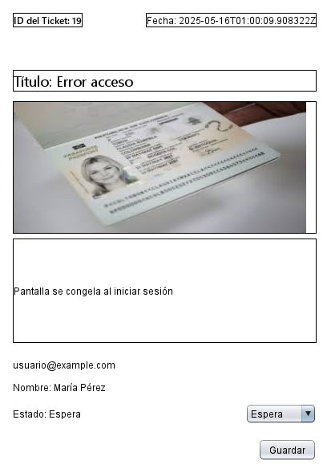

Contenido
Sigue estos pasos para instalar el software:
1. Barra lateral izquierda (Menú de navegación)
- HOME
- PQRS (actualmente seleccionado )
- SALIR (ícono circular con flecha)

Descripción de la Interfaz - Módulo PQRS en DOCFI
La interfaz corresponde al módulo de PQRS (Peticiones, Quejas, Reclamos y Sugerencias) de la aplicación llamada DOCFI. Está compuesta por tres áreas principales:

Botones de navegación con íconos e identificadores:
2. Campo central de Registros

Contiene una tabla con los siguientes campos:
- ID: Identificador del PQRS.
- Título: Texto del asunto o problema reportado.
- Fecha: Fecha de creación del PQRS.
- Estado: Estado actual del trámite (Espera, Proceso, Finalizado).
- Tomado: Usuario que está manejando el caso (ej: soporte1).
- Tipo: Clasificación del PQRS (Quejas, Peticiones, Reclamos, etc.).
- Vista: Botón “Ver” para desplegar el detalle del PQRS en el panel derecho como podemos ver en la imagen de referencia


En la parte superior encontramos un buscador de texto para filtrar por titulo del contenido.

Un filtro desplegable con las etiquetas: Todos, Espera, Proceso, Finalizado.

En la parte inferior encontraremos: botones de avance o retroceso según el número de registros del listado.

Panel derecho de detalle del PQRS

Cuando se selecciona un registro, en el campo Vista, botón Ver, se muestra el detalle del PQRS con campos editables:
- ID y Fecha (en la parte superior derecha)
- Tipo: Campo de texto para el tipo de PQRS.
- Título: Campo de texto para editar el título.
- Información: Área de texto amplia para mostrar o escribir el detalle del caso.
- Correo, Nombre, Estado, Tomado por: Campos de datos personales y estado de la gestión. La
casilla Estado es desplegable (Espera, Proces o, Finalizado)
junto el botón Guardar, para aplicar cambios.


2 .Barra lateral izquierda (Menú de navegación)
Botones de navegación con íconos e identificadores:
- HOME
- TICKETS (actualmente seleccionado y sombreado)
- PQRS
- SALIR (ícono circular con flecha)

Descripción de la Interfaz - Módulo TICKETS en DOCFI
La interfaz corresponde al módulo de TICKETS de la aplicación llamada DOCFI. Está compuesta por tres áreas principales:

Campo central de Registros

Contiene una tabla con los siguientes campos:
- ID: Identificador del TICKET.
- Título: Texto del asunto o problema reportado.
- Fecha: Fecha de creación del TICKET.
- Estado: Estado actual del trámite (Espera, Proceso, Finalizado).
- Tomado: Usuario que está manejando el caso (ej: soporte1).
- Vista: Botón “Ver” para desplegar el detalle del TICKET en el panel derecho.


En la parte superior encontramos un buscador de texto para filtrar por titulo del contenido.

Un filtro desplegable con las etiquetas: Todos, Espera, Proceso, Finalizado.

En la parte inferior encontraremos: botones de avance o retroceso según el número de registros del listado.

Panel derecho de detalle del TICKET

Cuando se selecciona un registro, en el campo Vista, botón Ver, se muestra el detalle del TICKET con campos editables:
- ID del ticket y Fecha (en la parte superior derecha)
- Título: Campo de texto que indica tipo de soporte técnico.
- Imagen: Campo de imagen dara una vista previa presionando doble click dentro de la imagen se amplia. 
- Información: Área de texto amplia para mostrar o escribir el detalle del soporte.
- Correo, Nombre, Estado: Campos de datos personales y estado de la gestión. La casilla Estado es desplegable (Espera, Proceso, Finalizado).
- Botón Guardar para aplicar cambios.